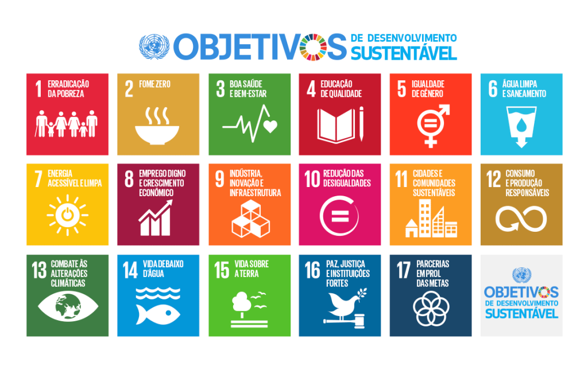

Quem somos?
Somos a Skill Up, uma plataforma digital focada na oferta de cursos técnicos voltados ao desenvolvimento de habilidades práticas para o mercado de trabalho. Alinhados à ODS 4, especialmente à meta 4.4, buscamos capacitar pessoas em áreas como tecnologia e lógica de programação, preparando-as para oportunidades reais de emprego e geração de renda. Nosso objetivo é oferecer um aprendizado direto, acessível e aplicado, priorizando conteúdos essenciais que realmente contribuam para a qualificação profissional e o crescimento individual, promovendo a inclusão e a equidade na educação e no desenvolvimento profissional.
Mais detalhes:
O que é a ODS?
As ODS (Objetivos de Desenvolvimento Sustentável) são uma iniciativa global da Organização das Nações Unidas que visa erradicar a pobreza, proteger o meio ambiente e promover uma vida digna, com paz e prosperidade para todos até 2030. Entre esses objetivos, destacamos a ODS 4: Educação de Qualidade, que busca garantir uma educação inclusiva, equitativa e acessível; nesta plataforma, nosso foco está especialmente na meta 4.4, que incentiva o desenvolvimento de habilidades técnicas e profissionais essenciais para o mundo do trabalho. Por isso, oferecemos cursos com uma abordagem alinhada às demandas do mercado, capacitando pessoas com conhecimentos aplicáveis e preparando profissionais para os desafios atuais, ampliando suas oportunidades de inserção e crescimento profissional.

Quem pode participar?
Todos podem participar! Nossos cursos são abertos a qualquer pessoa interessada em desenvolver habilidades técnicas, independentemente de formação ou experiência prévia. Acreditamos no poder da educação contínua como ferramenta de transformação e na importância de garantir acesso justo e igualitário às oportunidades, permitindo que mais pessoas evoluam profissionalmente e conquistem seu espaço no mercado.
Como Participar
Basta acessar nosso site e escolher o curso que mais combina com seus objetivos e interesses. Além disso, oferecemos recomendações de estudo personalizadas de acordo com sua área de interesse, juntamente com suporte contínuo ao longo de toda a sua jornada de aprendizado, garantindo uma experiência mais eficiente, guiada e focada no seu desenvolvimento profissional.
Escolha seu curso de interesse!
-
Técnico em Enfermagem: Prepare-se para atuar na saúde com qualidade e dedicação.
-
Técnico em Informática: Desenvolva habilidades em manutenção e suporte de sistemas.
-
Técnico em Mecânica: Domine a manutenção e operação de máquinas e equipamentos.
-
Técnico em Logística: Otimize processos de distribuição e gestão de suprimentos.
-
Técnico em Alimentos: Garanta qualidade e segurança na produção alimentar.
-
Técnico em Administração: Gerencie recursos e processos organizacionais com eficiência.
-
Técnico em Eletrotécnica: Trabalhe com instalações e manutenção de sistemas elétricos.
Nossos Parceiros
Conheça as empresas e instituições que colaboram com a Skill UP para oferecer melhores oportunidades de aprendizado.
-
PRONATEC
Programa Nacional de Acesso ao Ensino Técnico e Emprego, oferecendo cursos técnicos gratuitos.
-
Curso em Vídeo
Plataforma de cursos online gratuitos em programação e tecnologia.
-
Coursera
Cursos online de universidades renomadas, disponíveis em português.
-
Sistema Nacional de Emprego (SINE)
Serviço público para busca de emprego e qualificação profissional.